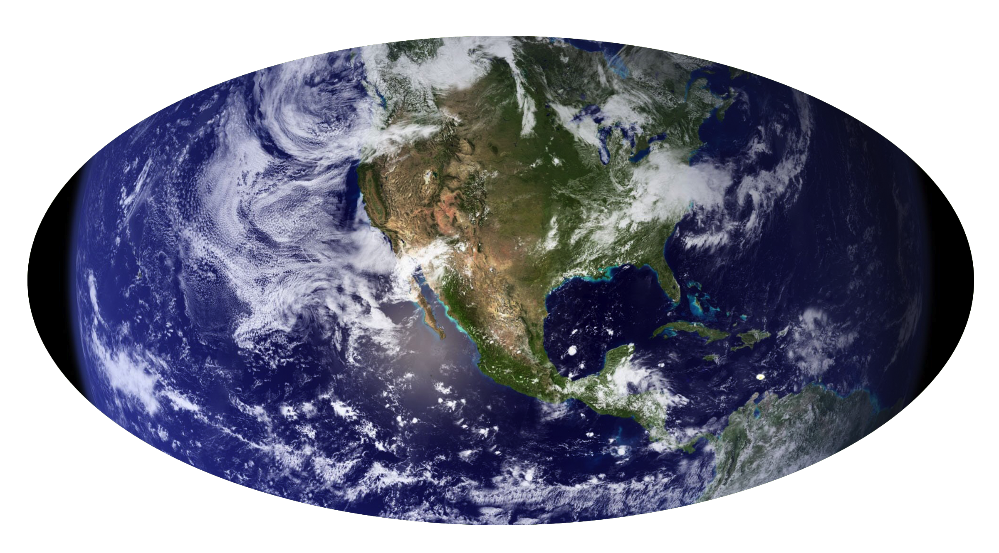

Their planet and its history
The planet where humans originate is named Earth. Data shows that Earth used to be a place with a varied climate, ranging from rainy forests with tall trees to dry and hot lands covered with sand, where few creatures could survive. At the present moment, the planet is in ruins. The lands are dry, with hard, cracked ground made of rock and dirt. The seas have risen from where they once were, leaving the continents small and old human structures submerged. Many humans live on elevated ground, far above sea level, in order to avoid their homes being flooded by the oceans.
